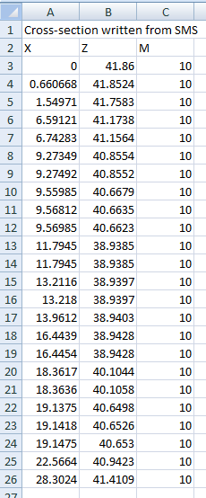
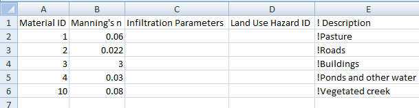

1.6 Cross-Sections
Cross-section hydraulic properties tables may come from several sources:
- Calculated using a cross-section profile in a .csv or similar formatted file.
- A hydraulic properties table in a .csv or similar formatted file.
- Flood Modeller .dat files (external source). The cross-section ID within the external file is specified in the Conn_1D_2D field in a 1d_nwk layer (see Table 1.3). This is used to link to the cross-section details within an external sources file specified via the XS Database command. Cross-sections are applied using the mid cross-section approach (Section 1.6.5).
- External sources such as MIKE 11 processed data .txt files or Flood Modeller .pro files, see the 2018 TUFLOW Manual for details of this legacy feature.
Cross-section profile and hydraulic properties data are accessed using a 1d_xs GIS layer and the .ecf command, Read GIS Table Links. Type “XZ” is specified if accessing a cross-section profile (distance versus elevation) and a type “CS” or “HW” is used if accessing a hydraulic properties table (elevation versus width). Table 1.4 presents the attributes required for the 1d_xs GIS layer. A number of optional flags are available for both “XZ” and “CS” or “HW” and are explained in more detail in Sections 1.6.1 and 1.6.2.
It is possible to let the water level at a cross-section to extend above the highest elevation in the hydraulic properties table. The default is to allow the water level to exceed ten times the depth of the CS or NA table before an instability is triggered. See Depth Limit Factor for further details.
When the water level exceeds the top of a cross-section, the conveyance properties are calculated based on glass walling the cross-section above the top. This is carried out by taking the effective flow area and using the effective flow width to calculate the conveyance properties assuming no side wall friction applies above the cross-section top.
Refer to TUFLOW Tutorial Module 11 for a model demonstration.
| No. | Default GIS Attribute Name | Description | Type |
|---|---|---|---|
| 1 | Source | Filename (and path if needed) of the file containing the tabular data. Must be a comma or space delimited text file such as a .csv file. | Char(50) |
| 2 | Type |
Two characters defining the type of table link. “XZ”: Cross-section XZ profile (can include horizontal variations in resistance). The first column is the distance column, and the second the elevation column. Other optional columns are described under the Flags attribute below. “CS” or “HW”: Cross-section hydraulic properties table. The first two columns must be elevation and width. Optional flags are described under the Flags attribute below |
Char(2) |
| 3 | Flags |
Optional flags are as follows: XZ Tables: “R”, “M” or “N”: The relative resistance (Column 3) is used to vary the bed resistance value (Manning’s n) across the section. Specify an “R” flag for relative resistance factor, an “M” flag to use a material number or an “N” flag for a Manning’s n value. “P”: Wetted perimeter (Column 4) “F” or “N”: Vertical change in resistance (Column 5). Use “F” for a multiplication factor and “N” for a Manning’s n value. “E”: Effective flow width (Column 6) |
Char(8) |
| 4 | Column_1 |
Optional. Identifies a label in the Source file that is the header for the first column of data. Values are read from the first number encountered below the label until a non-number value, blank line or end of the file is encountered. If this field is left blank, the first column of data in the Source file is used. |
Char(20) |
| 5 | Column_2 |
Optional. Identifies a label in the Source file that is in the header for the second column of data. If this field is left blank, the next column of data after Column_1 is used. |
Char(20) |
| 6 | Column_3 |
Optional. Identifies a label in the Source file that is in the header for the third column of data. If this field is left blank, the second column of data after Column_1 is used. |
Char(20) |
| 7 | Column_4 | Optional. Defines the fourth column of data. | Char(20) |
| 8 | Column_5 | Optional. Defines the fifth column of data. | Char(20) |
| 9 | Column_6 | Optional. Defines the sixth column of data. | Char(20) |
| 10 | Z_Increment | Optional. Sets the height increment in metres to be used for calculating hydraulic properties from a XZ cross-section profile. If less than 0.01, the increment is determined automatically. Only used for XZ cross-section data. | Float |
| 11 | Z_Maximum | Optional. Sets the maximum elevation in metres to be used for calculating hydraulic properties from a XZ cross-section profile. If less than the lowest point in the cross-section profile, Z_Maximum is taken as the highest elevation in the profile. Only used for XZ cross-section data. | Float |
| 12 |
Skew (in degrees) |
Optional. Adjusts the cross-section properties for XZ and CS/HW data according to the skew angle. Useful where the cross-section line is surveyed oblique to the flow direction. The skew angle is zero degrees in the direction of flow and 90 degrees if surveyed at a right angle to the direction of flow. For example, a value of 45 adjusts the horizontal dimensions by dividing by the √2. For irregular shaped structures, applying a skew angle can be used to model blockages as this reduces the effective flow width. For more information see the TUFLOW wiki. |
Float |
1.6.1 Type “XZ” Optional Flags
1.6.1.1 Relative Resistance
Varying the resistance across an XZ (offset-elevation) cross-section is possible by using either a relative resistance factor (R flag), different material ID values (M flag) or different Manning’s n values (N flag). These are discussed further in the sections below.
The relative resistance value applies midway to either side of the X-value (except the first and last X-values where it only applies to midway to the single neighbouring X-value). The reason for this is that material or n values can be correctly sampled from a GIS layer at the survey points. This is slightly different from some other 1D hydraulic modelling software that apply relative resistance values from the previous X-value to the current X-value or from the current to the next.
Sections of a cross-section can be “removed” by entering ‑1 (negative one) for a resistance value. This feature is particularly useful when developing a linked 1D/2D model where the 1D cross-sections are typically trimmed to the top of bank to avoid double counting of floodplain conveyance and storage. For more information on how negative “M”, “N” and “R” differ, please refer to the TUFLOW Wiki 1D Channels and Hydraulic Structures.
1.6.1.1.1 Relative Resistance Factor (R)
The relative resistance factor (R) is a multiplication factor applied to the primary Manning’s n value of the channel. Wherever the R value changes across the cross-section, a new parallel sub-channel is created. The total conveyance for the whole cross-section is determined by carrying out a parallel channel analysis of all the sub-channels. This approach allows the variation in bed resistance across a cross-section to be accounted for, and to force a parallel channel analyses so that conveyance does not decrease with height when the wetted perimeter suddenly increases (e.g. when overbank areas just become wet).
If using effective area (see Section 1.6.4), an R of 1.0 must occur at some point in the profile to indicate the primary sub-channel. If a value of 1.0 is not found an ERROR 1070 occurs, as grossly incorrect channel velocities can occur when using effective area with an inappropriate primary sub-channel. The Manning’s n value of the primary sub-channel is that specified in the 1d_nwk layer for the channel. The primary sub-channel does not have to be the lowest part of the cross-section.
1.6.1.1.2 Material Values (M)
If using material values (M), the Manning’s n value to be applied is taken from a Materials Definition File (see Read Materials File). If the Position “P” flag is not used, the material at the lowest Z value (cross-section bed) is used as the primary material, which then corresponds to a relative resistance factor of 1.0. If no material values are specified, a material value of one (1) is applied over the whole cross-section. If the P flag and values are used, the primary material is determined as that at the lowest Z value in the mainstream channel (see Section 1.6.1.1.3).
When using materials, the n_nF_Cd value in the 1d_nwk layer becomes a multiplier and should be set to one (1.0). If justified, it can be adjusted for calibration or sensitivity testing. For example, if a slightly higher resistance is desired along a channel, rather than setting different material values, change the n_nF_Cd value in the 1d_nwk layer to, say, 1.1 to increase all Manning’s n values across the cross-section by 10%.
A negative material value in the M column of a XZM cross-section table can now be specified to disable (i.e. block out or remove) sections of a cross-section. The negative value must be the negative of a valid Material ID in the Materials Definition File (see Read Materials File and Section ??). For more information on how negative “M”, “N” and “R” differ, please refer to the TUFLOW Wiki 1D Channels and Hydraulic Structures.
Example
In the following example, the TUFLOW Tutorial Module Model (discussed in Section ??) will be modified to demonstrate how Manning’s n values may be assigned to cross-sections based on values within the Materials Definition File.
An “M” flag is added to the 1d_xs layer referencing the cross-sectional data of the open channel.

An additional third column is then added to the .csv source file, containing one or more Material ID values from within the Materials Definition File. In the figure below, a Material ID of 10 has been assigned to the whole cross-section.

This correlates to a Manning’s n value of 0.08 as shown in the Materials Definition File.

When using the “M” flag to define material values, the “n_nF_Cd” attribute in the 1d_nwk becomes a multiplier (refer to Table 1.3). In most cases, this should be set to 1, as has been carried out for this example.
Once the model has been compiled, a check of the Manning’s n values applied to each cross-section may be viewed in the _ta_tables_check.csv.

1.6.1.1.3 Manning’s n Values (N)
If using Manning’s n values (N), the n value is specified directly, noting that the n_or_n_Cd value in the 1d_nwk layer becomes a multiplier and should be set to one (1.0). See discussion above for using material values. A value of ‑1 ignores that section of the profile. For information on how negative “M”, “N” and “R” differ, please refer to the TUFLOW Wiki 1D Channels and Hydraulic Structures.
1.6.1.1.4 Position Flag (P)
The position values are used to indicate whether an XZ point is left bank (1), mainstream (2) or right bank (3). The P value is used to indicate where the mainstream sub-channel is located. If the materials (M flag) is used, the primary material is taken as that at the lowest Z value in the mainstream sub-channel. If the P flag and values are not specified, the primary material is that at the lowest Z value across the whole section.
1.6.2 Type “HW” Optional Flags
1.6.2.1 Flow Area (A)
The effective flow area in m2 (default) or ft2 (if using
1.6.2.2 Wetted Perimeter (P)
The wetted perimeter in metres (default) or feet (if using
1.6.3 Parallel Channel Analysis
To calculate total conveyance, a cross-section needs to be sub-divided into panels for which the velocity is uniformly distributed. Conveyance for each panel is calculated using the Manning’s equation:
\[\begin{equation} K = \ \frac{1.0}{n}\ AR^{\frac{2}{3}} \tag{1.3} \end{equation}\]
Where:
- \(K\) = conveyance of panel
- \(n\) = Manning’s n roughness coefficient
- \(A\) = Flow Area (m2 or ft2)
- \(R\) = Hydraulic Radius (m or ft) – area / wetted perimeter
Note: Metric (SI) units are TUFLOW’s default. To use imperial units, ensure
The conveyance of a cross-section may reduce with height where there is a sudden increase in the wetted perimeter compared with a relatively small increase in flow area, causing the hydraulic radius to reduce despite the water level increasing. A WARNING is issued if this occurs and it is strongly recommended that the cross-section be reviewed and corrected.
The most common cause for the reduction in conveyance with height occurs when the extent of inundation across the cross-section increases markedly during the transition from in-bank to out-of-bank flow. The reducing conveyance with height problem is usually resolved by forcing a parallel channel analysis by specifying a change in resistance using the R, M or N flag discussed in the sections above.
Figure 1.2 illustrates the ALL PARALLEL method of conveyance calculation.

Figure 1.2: ‘All Parallel’ Conveyance Calculation Method
Figure 1.3: ‘Change in Resistance’ Conveyance Calculation Method
It should be noted that differences in results are expected between the two methods of conveyance calculation. The total number of panels for each calculation method will be different as demonstrated, thereby influencing the total conveyance.
The ALL PARALLEL approach has been chosen as the current default conveyance calculation method for ESTRY. This is not to imply that this method produces the more accurate result, rather it has been chosen as it generally does not cause conveyance reducing with height warnings.
1.6.4 Effective Area versus Total Area
For XZ (offset elevation) Cross-Sections, the flow area is calculated as an effective area (E flag) or a total area (T flag). Use of the flag will override the global setting set by Flow Area where the default approach is to use the effective area.
If there is no variation in relative resistance across the cross-section there is no difference between effective and total areas. This is dependent on the relative resistance being 1.0 across the whole section. ERROR 1070 is produced if the relative resistance is not 1.0 somewhere along the cross-section when using effective area.
For an open channel, the total conveyance of a cross-section is not affected by whether effective or total area is used. In the case of effective area the wetted perimeter is adjusted to compensate for the change in flow area so as to produce the same conveyance as would occur for total area. For special channels that use cross-sections such as bridges, weirs and irregular culverts, the flow area used is the effective or total area as specified. This can be useful if the effects of blockage or congestion within the section needs to be modelled.
The primary differences between using effective and total area are:
- The channel velocity calculated is the depth and width average of the primary (normally mainstream) parallel sub-channel if using effective area, and the averaged depth and width of the whole cross-section if using total area.
- Where the effective and total areas are significantly different, the channel velocities used in the 1D momentum equation will be significantly different. If the channel velocity is sufficiently high and different depending on whether effective or total area is used, the inertia terms in the 1D momentum equation may affect the results. Note the frictional (bed resistance) term in the momentum equation is NOT affected as the hydraulic properties for the cross-section are adjusted so that the total conveyance is the same irrespective of whether effective or total area is used.
- Effective area gives a more reliable calculation of the mainstream velocity, and a more accurate estimate of approach and exit velocities of structures, and more appropriate velocities for advection-dispersion and sediment transport calculations. Where velocities are not high or significantly changed when using effective or total area, the water level and flow results are usually identical or very similar.
1.6.5 Mid Cross-Sections
Cross-sections may be specified using lines digitised within a 1d_xs layer partway along the channel. The upstream and downstream invert levels of the channel are both assigned the invert level of the cross-section if a value of -99999 has been specified within the 1d_nwk channel (refer to Table 1.3). If either of these attributes is greater than ‑99999, the invert of the channel is set to the GIS attribute value rather than that of the cross-section bed elevation.
The mid cross-section approach is the only approach available for structures such as bridges, weirs and irregular shaped culverts. It can also be used for open channels, however the digitisation of cross-section lines within a 1d_xs layer that have been snapped to the channel ends (as described in Section 1.6.6 below) has added advantages and is recommended.
If using a mid cross-section 1d_xs line with more than two vertices, a intermediate vertex must be snapped to the 1d_nwk channel.
1.6.6 End Cross-Sections
Cross-sections for open channels (S channels and the superseded G channels) can be specified using lines digitised within a 1d_xs layer at the channel ends, rather than a single cross-section midway along the channel as described above. This approach has the following benefits:
- The upstream and downstream inverts can be based on the beds of the cross-sections, thereby saving some effort to enter this information within the 1d_nwk file. To do this, set the US_Invert and DS_Invert attributes in the 1d_nwk layer to ‑99999. If either of these attributes is greater than ‑99999, the invert is set to the attribute value rather than that of the cross-section bed.
- Cross-section surveys from some other 1D models often have the cross-sections at the channel ends. This makes it easier to use these external data sources.
There are a few rules on how end cross-sections are interpreted and applied, as follows:
- The 1d_xs cross-section lines must have a vertex snapped to the channel end.
- If a 1d_xs cross-section line occurs elsewhere along an open channel with end cross-sections, the midway cross-section prevails. This is particularly useful where two channels’ ends are snapped to an end cross-section, but the end cross-section is to be applied to only one of the channels (e.g. one channel is a river channel using end cross-sections, and the other is an overbank channel). For the overbank channel, specify a cross-section line somewhere along the channel, and preference will be given to this cross-section rather than the end cross-section. Alternatively, an X connector can be used if end cross-sections are required for both channels. See Section 1.8.3.
- End cross-sections cannot be used to override previously defined cross-section properties for a G or S channel. You can override the end cross-sections using a midway cross-section.
- For channels other than S and G channels, end cross-sections are ignored.
1.6.7 Interpolated Cross-Section Protocols
Cross-sections may be interpolated for channels (excluding C and R culvert channels) that have not been assigned a cross-section. A series of channels may now be digitised between two cross-sections, and the cross-section properties at each channel are linearly interpolated between the two cross-sections. The protocols applied when interpolating cross-sections and setting Manning’s n values are:
- If a channel has a cross-section at each end, the processed data of these cross-sections is averaged.
- If a channel has a cross-section midway, this cross-section takes priority over any end cross-sections.
- If a channel only has one end cross-section, TUFLOW traverses upstream/downstream to find the next available cross-section, and uses this to interpolate the cross-section properties for that channel. The next available cross-section can be a midway or end cross-section.
- If a channel has no cross-sections attached to it, TUFLOW traverses upstream and downstream to find the nearest cross-sections and interpolates the channel properties based on these cross-sections.
- When traversing upstream/downstream to find a cross-section:
- If a junction (three or more channels snapped together) is reached (excluding pits and connectors), an ERROR is issued as it is not possible to determine which branch to follow. Note, channels connected to a junction using a connector (Type “X”) are not used for traversing. Use connectors to connect side channels to the main branch to avoid interpolating sections from side channels
- The digitised direction of the channel is important and controls the direction used to traverse upstream and downstream. Ensure the channels are digitised in a consistent direction (usually from upstream to downstream).
- If a junction (three or more channels snapped together) is reached (excluding pits and connectors), an ERROR is issued as it is not possible to determine which branch to follow. Note, channels connected to a junction using a connector (Type “X”) are not used for traversing. Use connectors to connect side channels to the main branch to avoid interpolating sections from side channels
- If a channel has an end cross-section only at one end, and no cross-section is found when traversing, this end cross-section is used at both ends for that channel only.
- The inverts are also interpolated using the cross-section beds (unless the inverts have been manually entered into the 1d_nwk attributes). Specify -99999 for the 1d_nwk channel inverts to be interpolated from the cross-sections.
- Cross-sections that are interpolated can be of any format, including CS or HW 1d_xs formats (see Table 1.4).
- The Manning’s n value assigned to the channel’s cross-section is as follows:
- If the cross-sections used for interpolation have no Manning’s n values (i.e. for XZ cross-sections, M or N was not specified, or for CS/HW cross-sections, N was not specified), the 1d_nwk Manning’s n attribute of the channel is used.
- If the cross-sections used for interpolation have Manning’s n values, the value is interpolated from the cross-section n values (at the bed) and multiplied by the 1d_nwk Manning’s n attribute of the channel. In this case the 1d_nwk n_or_n_F attribute is a multiplier that can be used to calibrate the model.
- If one of the two cross-sections used for interpolation has a Manning’s n value, and the other does not, the n value used is interpolated using the channel’s 1d_nwk Manning’s n value and the cross-section’s n value. Ideally, the model should be set up using the same approach everywhere so that this situation does not arise as it may cause undesirable results. A WARNING is issued if this occurs.
- If the cross-sections used for interpolation have no Manning’s n values (i.e. for XZ cross-sections, M or N was not specified, or for CS/HW cross-sections, N was not specified), the 1d_nwk Manning’s n attribute of the channel is used.
The interpolation of cross-sections is the default. Interpolate Cross-Sections can also be used to switch this feature ON or OFF.